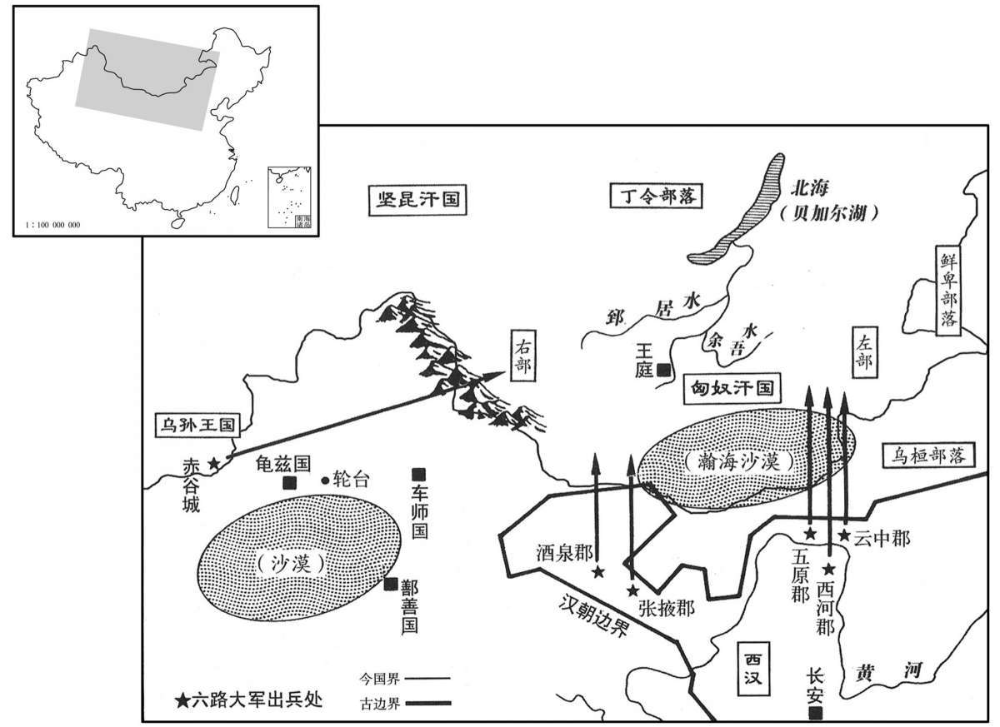

公元前72年资治通鉴：本年记事、原文与白话对照
按原书编年位置阅读；追叙和史论不等于本年发生的事件。白话采用所据译本，缺译不以生成译文补齐。
卷24 · 本年记事
公元前72年 · 汉中宗孝宣皇帝本始二年
本始二年〔（己酉、前七二）〕

本年形势与背景参考图
春，大司农田延年有罪自杀。昭帝之丧，大司农僦民军，延年诈增僦直，〔师古曰：僦，谓赁之，与雇直也。僦，子就翻。〕盗取钱三千万，为怨家所告。〔怨，于元翻。〕霍将军召问延年，欲为地道。〔师古曰：为之开通道路，使有安全之地也。〕延年抵曰：〔师古曰：抵，拒讳也。抵，丁礼翻。〕“无有是事！”光曰：“即无事，当穷竟！”〔师古曰：既无实事，当令有司穷治，尽其理。〕御史大夫田广明谓太仆杜延年曰：“春秋之义，以功覆过。〔公羊传：僖十七年夏，灭项。孰灭之？齐灭之。曷为不言齐灭之？为桓公讳也。桓公尝有存亡继绝之功，故君子为之讳。〕当废昌邑王时，非田子宾之言，大事不成。〔延年，字子宾，事见上昭帝元平元年。〕今县官出三千万自乞之，何哉？〔师古曰：谓自乞与之也。柳宗元曰：哉，疑辞也。何哉，犹曰何如也。乞，音气。〕愿以愚言白大将军！”延年言之大将军，大将军曰：“诚然，实勇士也！当发大议时，震动朝廷。”光因举手自怃〔【章：甲十五行本“怃”作“抚”；乙十一行本同；孔本同。】〕心曰：“使我至今病悸。〔师古曰：悸，心动也，音揆。韵略：其季翻。〕谢田大夫晓大司农，通往就狱，得公议之。”〔师古曰：晓者，告白意指也。通者，从公家通理也。光忿其拒讳，故不佑之。〕田大夫使人语延年。〔语，牛倨翻。〕延年曰：“幸县官宽我耳，何面目入牢狱，使众人指笑我，卒徒唾吾背乎！”即闭阁独居斋舍，偏袒，持刀东西步。数日，使者召延年诣廷尉。闻鼓声，自刎死。〔晋灼曰：使者至司农，司农发诏书，故鸣鼓也。师古曰：刎，谓断颈也。刎，武粉翻。〕
春季，大司农田延年因罪自杀。为汉昭帝发丧时，大司农雇用民间车崐辆，田延年假称雇车费用增加，贪污了三千万钱，被与他有仇怨的人告发。霍光召田延年来询间，本打算为他开脱。可是田延年拒不承认，说：“没有此事！”霍光说：“如果真的没有此事，就应当深入追究！”御史大夫田广明对太仆杜延年说：“按照《春秋》大义，可以用功劳掩盖过失。当初在废黜昌邑王时，若不是田延年站出来，则大事不能成功。如今就当作是他自己向朝廷乞求赐给他三千万钱，怎样呢？希望将我这番话禀告大将军。”杜延年把田广明的话告诉了大将军霍光，霍光说：“确实如此，田延年真是勇士。当初在决定大事时，多亏田延年挺身而出，震动朝廷。”霍光于是抬手按在自己的心口上，继续说：“当时的情景，使我至今还心有余悸。请你代我向田大夫道歉，让他明白告诉大司农田延年，到监狱去，会得到公平的裁决。”田广明派人通知田延年，田延年说道：“就算朝廷幸而宽恕我，我又有何面目进入牢狱，让众人对我指点、讥笑，让狱卒囚犯在我背后唾骂呢！”于是一个人住在大司农官衙旁边的屋子里，紧闭房门，袒露一臂，拿着刀在屋中徘徊。几天后，朝廷使者前来召田延年去廷尉。田延年听到开读诏书的鼓声，便自刎而死。
夏，五月，诏曰：“孝武皇帝躬仁谊，厉威武，功德茂盛，而庙乐未称，〔师古曰：称，副也。称，尺证翻。〕朕甚悼焉。其与列侯、二千石、博士议。”于是群臣大议庭中，〔师古曰：大议，总会议也。此庭中，谓朝廷之中。〕皆曰：“宜如诏书。”长信少府夏侯胜独曰：“武帝虽有攘四夷、广土境之功，然多杀士众，竭民财力，奢泰无度，天下虚耗，百姓流离，物故者半，蝗虫大起，赤地数千里，〔师古曰：言无五谷之苗。〕或人民相食，畜积至今未复；〔畜，读曰蓄。〕无德泽于民，不宜为立庙乐。”公卿共难胜曰：〔为，于伪翻。难，乃旦翻。〕“此诏书也。”胜曰：“诏书不可用也。人臣之谊，宜直言正论，非苟阿意顺指。议已出口，虽死不悔！”于是丞相、御史劾奏胜非议诏书，毁先帝，不道；及丞相长史黄霸阿纵胜，不举劾；俱下狱。〔劾，户概翻。下，遐嫁翻。〕有司遂请尊孝武帝庙为世宗庙，奏盛德、文始五行之舞。〔应劭曰：宣帝复采昭德之舞为盛德舞，以尊世宗庙也。诸帝庙皆常奏文始四时五行舞也。〕武帝巡狩所幸郡国皆立庙，如高祖、太宗焉、夏侯胜、黄霸既久系，霸欲从胜受尚书，胜辞以罪死。霸曰：“朝闻道，夕死可矣。”〔论语载孔子之言〕胜贤其言，遂授之。系再更冬，〔师古曰：更，历也。更，音工衡翻。〕讲论不怠。
夏季，五月，汉宣帝颁布诏书说：“孝武皇帝行仁义，振威武，功德极盛，但祭祀时所用的音乐却与此不相称，朕感到非常难过。有关官员应与列侯、二千石、博士共同议定。”于是群臣齐集朝廷讨论此事，都说：“应按诏书的意思去做。”唯独长信少府夏侯胜说道：“孝武皇帝虽然有征服四夷、开疆拓土的功绩，但使得将士们大量死亡，人民财力枯竭，奢侈无度，天下虚耗，百姓流离失所，死亡过半，再加上蝗灾大起，数千里不见草木庄稼，以致民间竟出现杀人食用的惨景，积弊至今尚未消除。武帝并无恩泽于百姓，不应为其设立祭祀之乐。”公卿大臣们一齐责备他说：“这是皇上的诏命。”夏侯胜说：“虽然是诏命，也不能依从。人臣的大义，应当坚持原则，直言无隐，不能苟且阿谀皇上的意思。我说出自己的观点，即便死也不会后悔！”因此，丞相、御史等上奏汉宣帝，弹劾夏侯胜非议诏书，诋毁先帝，大逆不道，以及丞相长史黄霸附合纵容夏侯胜，不肯举劾，于是将二人一并逮捕下狱。于是由主管官员出面，奏请尊孝武帝庙为世宗庙，定《盛德舞》、《文始五行之舞》为祭祀用乐。凡武帝生前出巡到过的郡、国一律建庙祭祀，与高祖皇帝、太宗皇帝一样。夏侯胜、黄霸长期被关在狱中，黄霸想跟夏侯胜学习《尚书》，夏侯胜认为已经犯下死罪，学也没用，所以推辞不愿讲授。黄霸说：“早晨明白了真理，即使晚上就死也无遗憾。”夏侯胜赞赏他的话，便给他讲授《尚书》。在狱中经历了两个冬天，一直不倦地讲论。
初，乌孙公主死，汉复以楚王戊之孙解忧为公主，妻岑娶。岑娶胡妇子泥靡尚小，岑娶且死，〔复，扶又翻。妻，七细翻。汉书作岑陬。师古曰：岑，音仕林翻。陬，音子侯翻。〕以国与季父大禄子翁归靡，曰：“泥靡大，以国归之。”翁归靡既立，号肥王，复尚楚主，生三男、两女。长男曰元贵靡，次曰万年，次曰大乐。昭帝时，公主上书言：“匈奴与车师共侵乌孙，唯天子幸救之！”汉养士马，议击匈奴。会昭帝崩，上遣光禄大夫常惠使乌孙。乌孙公主及昆弥皆遣使上书，言：“匈奴复连发大兵，侵击乌孙。使使谓乌孙，『趣持公主来！』〔趣，读曰促。〕欲隔绝汉。昆弥愿发国精兵五万骑，尽力击匈奴。唯天子出兵以救公主、昆弥！”先是匈奴数侵汉边，〔先，悉荐翻。〕汉亦欲讨之。秋，大发兵，遣御史大夫田广明为祁连将军，四万余骑，出西河；度辽将军范明友三万余骑，出张掖；前将军韩增三万余骑，出云中；后将军赵充国为蒲类将军，三万余骑，出酒泉；云中太守田顺为虎牙将军，三万余骑，出五原；期以出塞各二千余里。以常惠为校尉，持节护乌孙兵共击匈奴。
当初，嫁到乌孙的汉朝公主去世后，汉朝又封楚王刘戊的孙女刘解忧为公主，嫁给乌孙王。乌孙王的胡人妻子所生儿子泥靡年纪还小，乌孙王临死前，将国家交给叔父大禄的儿子翁归靡，嘱咐说：“等泥靡长大成人后，你要把国家还给他。”翁归靡即乌孙王位之后，号称肥王，又娶汉公主刘解忧为妻，并生下三儿二女。长子名叫元贵靡，次子名叫万年，三子名叫大乐。汉昭帝时，公主曾上书说：“匈奴与车师国联合进犯乌孙，盼天子救援！”于是汉朝秣马厉兵，打算进攻匈奴。适逢汉昭帝去世，汉宣帝派光禄大夫常惠出使乌孙。汉公主及乌孙王都派遣使臣，上书汉朝说：“匈奴又接连派出大军袭击乌孙，还派使臣来对乌孙说：‘速将汉朝公主交来！’企图断绝乌孙与汉朝的联系。乌孙王愿意派出国内精锐骑兵五万，全力抗击匈奴，请求天子派兵来救公主和乌孙王。”在此之前，匈奴曾几次侵扰汉朝边塞，汉朝也正想出兵征讨。秋季，汉朝派遣重兵，以御史大夫田广明为祁连将军，率骑兵四万余人，从西河出塞；度辽将军范明友率骑兵三万余人，从张掖出塞；前将军韩增率骑兵三万余人，从云中出塞；后将军赵充国为蒲类将军，率骑兵三万余人，从酒泉出塞；云中太守田顺为虎牙将军，率骑兵三万余人，从五原出塞。约定诸路大军各出塞二千余里。又派常惠为校尉，携带皇帝符节督乌孙军队共击匈奴。